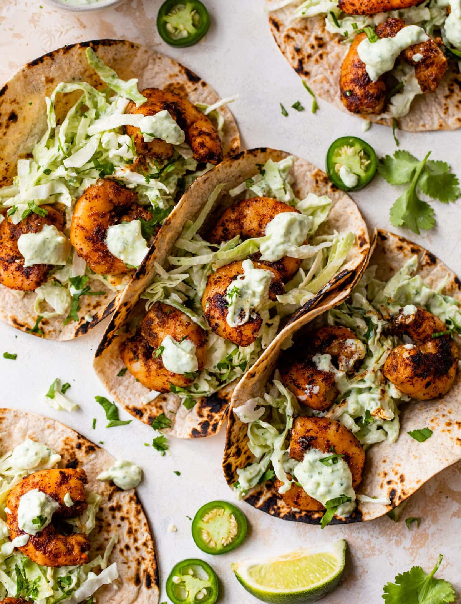

Shrimp Tacos

Description
These shrimp tacos are the easiest 30 minute weeknight meal. I ate shrimp
tacos for the first time in Cabo last summer, and I knew I needed to add
them to my recipe rotation! The key is to use the air fryer to get the
shrimp nice and crispy with little effort.
Ingredients
- 1 lb shrimp
- 8 corn tortillas
- 4 tbs taco seasoning
- 3 cups shredded cabbage
- 1 can black beans
- 1 tbs avocado oil
- 2 tbs greek yogurt
Steps
-
Place shrimp in the air fryer. Cover with avocado oil and toss with half
the taco seasoning. Air fry at 360 for 6 minutes.
-
While shrimp cooks, heat the corn tortillas on a pan over medium-high.
-
Toss shredded cabbage with the rest of the taco seasoning and the greek
yogurt.
-
Once the shrimp is done, assemble your tacos with black beans, shrimp,
and cabbage mixture. Top with lots of salsa and your favorite taco
toppings!